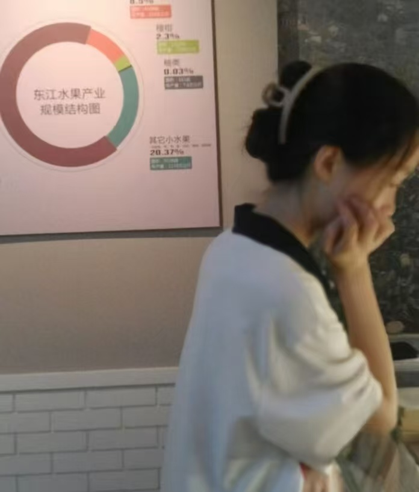
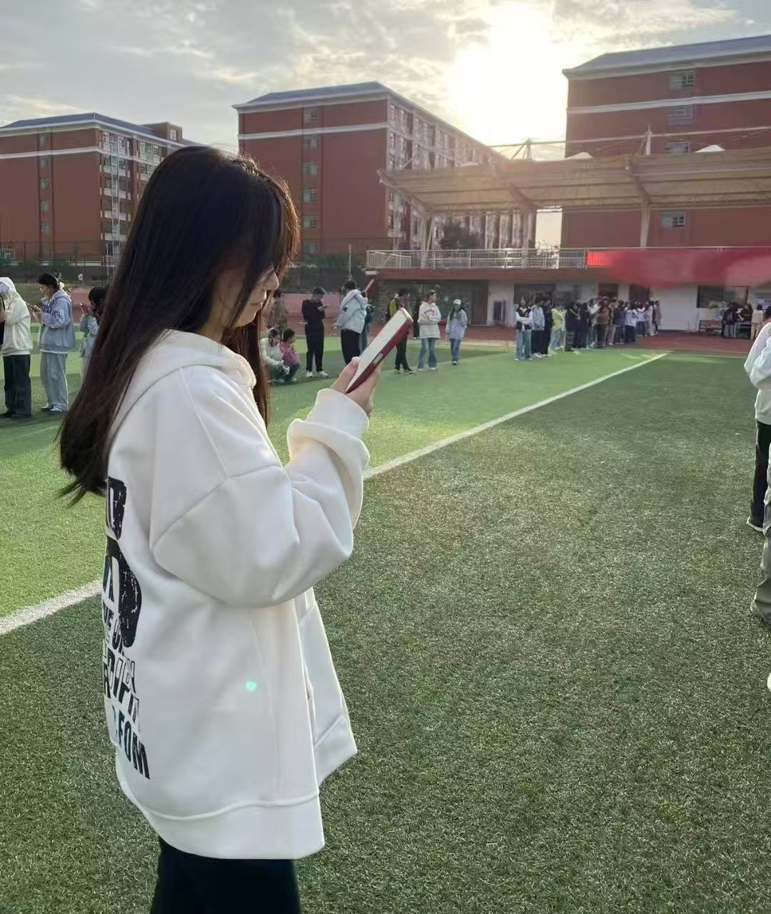
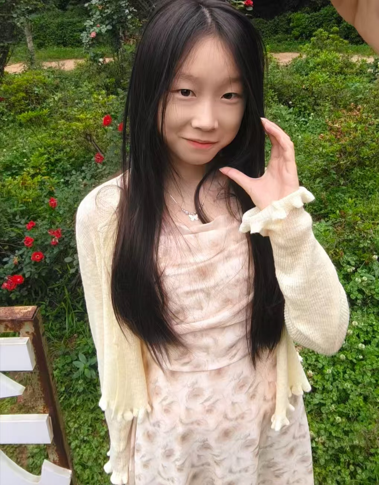
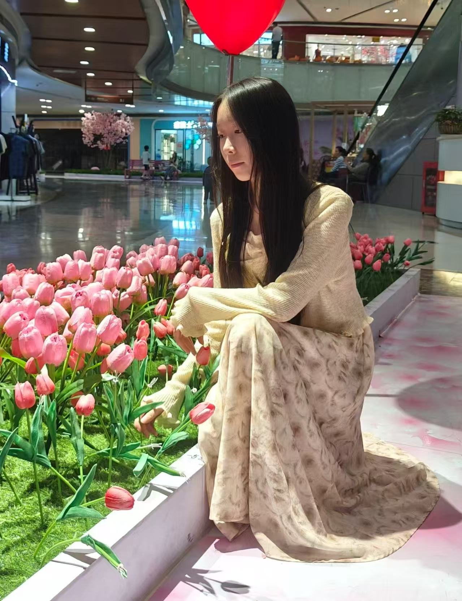

关于你的故事 · 歌声与日常
TA是： 一个把温柔藏在细节里的人，清唱时的声音像裹了糖，镜头里的每个瞬间都透着鲜活的可爱。打游戏时，她更是闪耀全场，拿西施时能以精妙的拉扯和精准的控场掌控局势，用妲己时一套技能秒人干净利落，玩瑶也能贴心守护队友。
TA的小特点： 喜欢粉色的软萌感，认真时会皱起小眉头，放松时又像只软乎乎的小猫~
TA的日常： 会在展览里认真看图表，会在操场接住夕阳，会在花园和玫瑰合影，也会在商场的花海里当「春日小精灵」~
歌曲1：《不为谁而作的歌》
歌曲2：《我有一个道姑朋友》
♥ "貂蝉姐姐附体！金牌中路月下无限连秀翻全场，怒摘三颗星！峡谷法王实至名归，求带飞~" 💎
♥ "瑶妹附体！顶级游走护C开团样样行，盾厚得像城墙，三颗星轻松到手，峡谷第一辅助非你莫属！" ★
♥ "哇塞，绝世王者就是牛！草丛女王心控秒杀流，金牌中路支配峡谷！这实力求躺赢！" 🏆
♥ “峡谷垂钓宗师！西施一技能强制位移神预判，你就是峡谷“拉人狂魔”，快带我飞！🐟”

♡ 这是某个研学日的你——认真看展览的样子，连头发丝都透着专注，像把整个世界都装进了思考里。

♡ 操场的夕阳把你裹在温柔里，低头看手机的侧影，像藏着一整个青春的细碎心事，风都跟着慢了下来。

♡ 花园里的你像沾了花香的小精灵，连身后的红玫瑰都成了你的背景板。

♡ 商场的郁金香丛里，你蹲下来碰花瓣的样子，像把春天都捧在了手心里，连爱心气球都在为你心动。
♡ 浴室镜前的随性自拍，乱糟糟的头发反而透着松弛的可爱，连手机壳都和你一样软乎乎的。